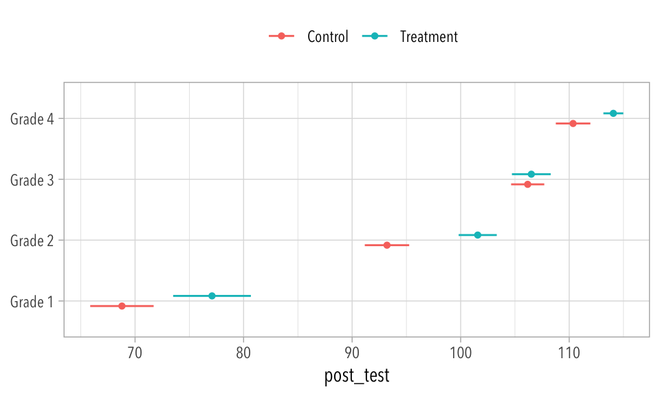
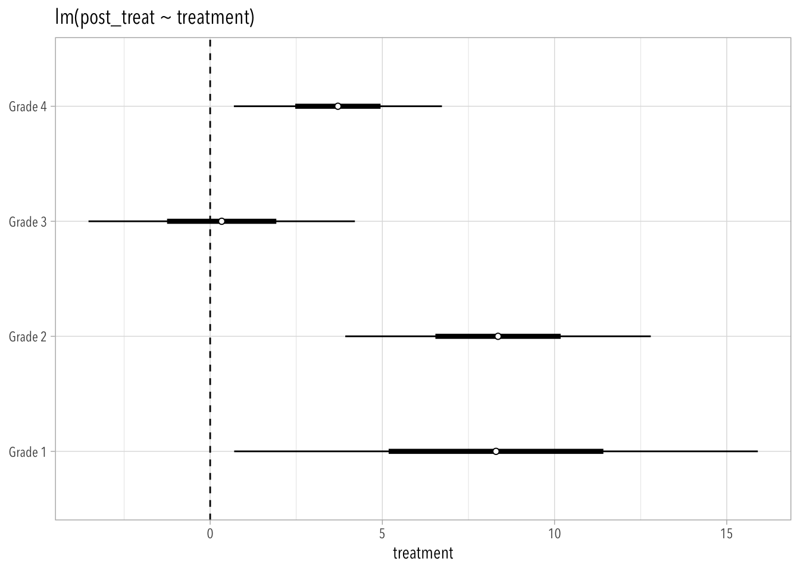
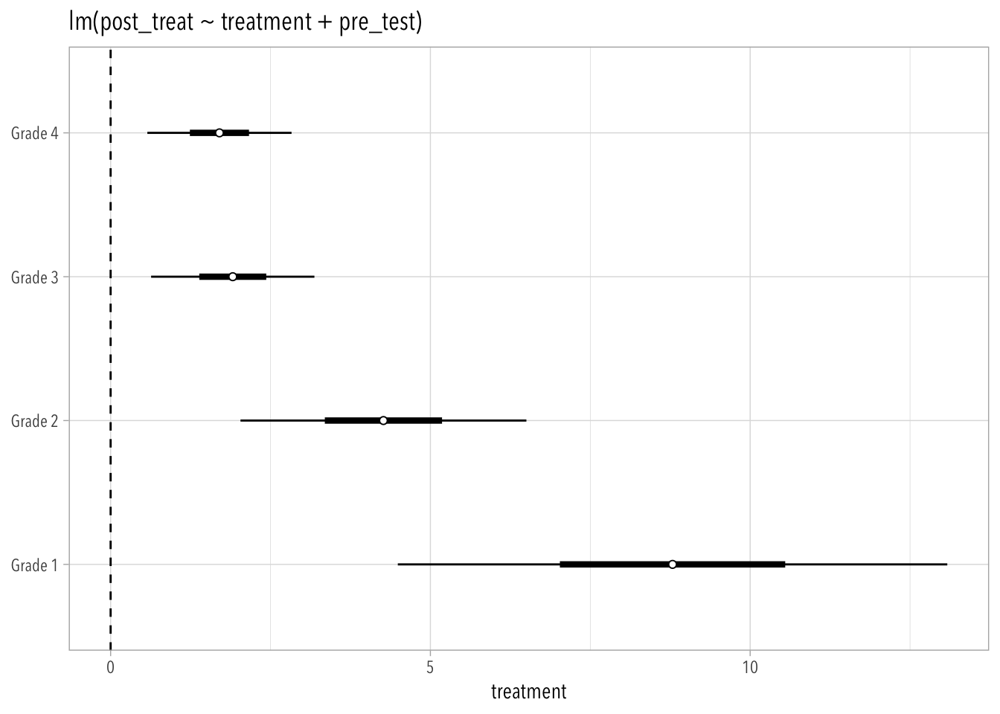

library(tidyverse)
theme_set(
theme_light(base_family = "Avenir Next Condensed") +
theme(strip.background = element_rect(fill = "#666666"))
)4 Experiments
4.1 Notation
Experiments work because they make the distribution of potential outcomes the same across levels of the treatment variable. In other words, the potential outcomes and the treatment indicator are independent.
\[ Y^0, Y^1 \perp T \tag{4.1}\]
Thus, in expectation:
\[ \begin{align} E[Y^0 \mid T = 0] &= E[Y^0 \mid T = 1], \\\\ E[Y^1 \mid T = 0] &= E[Y^1 \mid T = 1] \end{align} \tag{4.2}\]
Which means that we can easily estimate the average causal effect of \(T\) over all units in a population:
\[ \text{ATE} = \underbrace{E[Y^1 - Y^0] = E[Y^1] - E[Y^0]}_\text{by linearity of expectations} \tag{4.3}\]
In the absence of randomization, so that treatment and control groups differ on pre-treatment characteristics, we might observe the following biases:
Baseline bias. The two groups might be different from each other whether they get treated or not.
Treatment effect heterogeneity. The two groups might respond differently to the treatment.
This is important because researchers sometimes assume a constant effect for every unit in the population. This is implied in the unit homogeneity assumption. But if the variability of causal effects is large across the population, then the ATE might not represent the causal effect of a specific unit very well; the ATE might be irrelevant, no matter how carefully we estimate it.
Three types of treatment effects:
\(\text{ATE}\), for all units (effect of switching)
\(\text{ATT}\), for treated units (effect of taking away treatment)
\(\text{ATC}\) or \(\text{ATU}\), for untreated units (effect of adding treatment)
Table 4.1 allows us to gain further intuition on these calculations with a hypothetical example in which people are assigned college degrees randomly.
| Group (\(T\)) | \(E[Y^1]\) | \(E[Y^0]\) |
|---|---|---|
| College Degree (\(T = 1\)) | 1000 | 600* |
| No Degree (\(T = 0\)) | 800* | 500 |
If 30% of the population has a degree…
What is the naive estimate?
500
What is the ATT?
400
What is the ATC?
300
What is the ATE?
\(0.3\times 400 + 0.7 \times 300 = 330\)
More than two treatment levels, continuous treatments, and multiple treatment factors
Multiple treatment effects can be defined relative to a baseline level, following the general principles of regression modeling with indicator (or dummy) variables.
Treatment levels can be continuous.
To conceptualize randomization with a continuous treatment, think of spinning a spinner that can land on any of the potential levels of the treatment assignment. As with regression inputs in general, it can make sense to fit more complicated models as suggested by theory or supported by data. A linear model—which estimates the average effect on \(y\) for each additional unit of \(z\)—is a natural starting point for effects that are believed to be monotonically increasing or decreasing functions of the treatment level.
Gelman, Hill, and Vehtari (2020, 342)
Finally, we can also consider multiple simultaneous treatments.
…multiple treatments can be administered in combination. For instance, depressed individuals could be randomly assigned to receive nothing, drugs, counseling sessions, or both drugs and counseling sessions. These combinations could be modeled as two treatments and their interaction or as four distinct treatments.
Gelman, Hill, and Vehtari (2020, 342)
Using design and analysis to address imbalance and lack of overlap between treatment and control groups
Regression can be useful even in the context of randomized experiments.
In practice, we can never ensure that treatment and control groups are balanced on all relevant pre-treatment characteristics. However, there are statistical approaches that may bring us closer. At the design stage, we can use randomization to ensure that treatment and control groups are balanced in expectation, and we can use blocking to reduce the variation in any imbalance. At the analysis stage, we can adjust for pre-treatment variables to correct for differences between the two groups to reduce bias in our estimate of the sample average treatment effect. We can further adjust for differences between sample and population if our goal is to estimate the population average treatment effect.
Gelman, Hill, and Vehtari (2020, 344)
We can increase the precision of treatment effect estimates by adjusting for pre-treatment variables that are predictive of the outcome—i.e., we get lower standard errors on the treatment parameter.
Group or cluster-randomized experiments
Sometimes it’s difficult to randomize treatment assignments to individual units, and so we might randomize groups or clusters to receive the treatment instead.
A decision to assign treatments at the group level can be driven by cost or logistical concerns. It might be more cost effective to provide free flu shots to a random subset of health clinics, for example, than to have professionals go to every clinic and then randomly assign individuals to receive shots. Assignment at the clinic level would also avoid creating ill will among potential study participants being deprived of a service that others in the same location are able to receive. Cluster-randomized experiments are also used to avoid spillover or contagion effects (which can also be considered as violations of the stable unit treatment value assumption or SUTVA).
Gelman, Hill, and Vehtari (2020, 349–50)
4.2 SUTVA
Besides ignorability (see ?eq-ignore), randomization implies certain other properties which we might consider to be assumptions.
The most important one is the stable unit treatment value assumption (SUTVA). It means that we assume that there is no interference among units (i.e., no spillovers) and no hidden versions of the treatment.
Thus, one can imagine person \(i\)’s outcome to be “a function not only of her own treatment assignment, but also the treatment assignments of others in the sample” (Gelman, Hill, and Vehtari 2020, 353). These becomes intractable very quickly. For example, in a sample of just 10 people and a binary treatment, we would have 210 = 1024 potential outcomes for each person. Thus, researchers often hope that there is no interference among units, or else they think about modeling spillover in some way.
SUTVA also implies that there are no hidden versions of treatments—i.e., we want \(t_i\) to equal \(t_j\).
Examples of potential SUTVA violations abound. An experiment testing the effect of a new fertilizer by randomly assigning adjacent plots to treatment or control is a classic example. Fertilizer from one plot might leach into an adjacent plot assigned to receive no fertilizer and thus affect the yield in that control plot. Vaccines that reduce the probability of a contagious disease within a school, business, or community could easily lead to violation of SUTVA if the vaccine is actually effective. Consider an experiment that recruited families from the same public housing complex and randomized them to receive a voucher to move to a better neighborhood or not. This could suffer from interference if a given family moving might influence (positively or negatively) the well-being of another family that happened to be randomized to not receive the voucher.
Gelman, Hill, and Vehtari (2020, 353)
In educational settings, potential SUTVA violations are often a reason to assign treatments at the classroom or school level.
4.3 Extra
4.3.1 Average Treatment Effects
18.4 The table below describes a hypothetical experiment on 8 people. Each row of the table gives a participant and her pre-treatment predictor \(x\), treatment indicator \(z\), and potential outcomes \(y^0\) and \(y^1\).
Code
d <- data.frame(
X = c(3, 5, 2, 8, 5, 10, 2, 11),
Z = c(0, 0, 1, 0, 0, 1, 1, 1),
Y0 = c(5, 8, 5, 12, 4, 8, 4, 9),
Y1 = c(5, 10, 3, 13, 2, 9, 1, 13),
row.names = LETTERS[1:8]
)
d <- d |>
mutate(Y = ifelse(Z == 0, Y0, Y1))
knitr::kable(d)| X | Z | Y0 | Y1 | Y | |
|---|---|---|---|---|---|
| A | 3 | 0 | 5 | 5 | 5 |
| B | 5 | 0 | 8 | 10 | 8 |
| C | 2 | 1 | 5 | 3 | 3 |
| D | 8 | 0 | 12 | 13 | 12 |
| E | 5 | 0 | 4 | 2 | 4 |
| F | 10 | 1 | 8 | 9 | 9 |
| G | 2 | 1 | 4 | 1 | 1 |
| H | 11 | 1 | 9 | 13 | 13 |
Naive estimate:
i <- as.logical(d$Z)
## Naive Estimate:
mean(d$Y1[i] - d$Y0[!i])[1] -0.75## ATT:
mean(d$Y1[i] - d$Y0[i])[1] 0## ATE:
mean(d$Y1 - d$Y0)[1] 0.125Simulate a new completely randomized experiment on these 8 people; that is, resample \(z\) at random with the constraint that equal numbers get the treatment and the control.
j <- sample(i)
## Naive Estimate:
mean(d$Y1[j] - d$Y0[!j])[1] 3.75## ATT:
mean(d$Y1[j] - d$Y0[j])[1] 1## ATE:
mean(d$Y1 - d$Y0)[1] 0.125Again:
k <- sample(i)
## Naive Estimate:
mean(d$Y1[k] - d$Y0[!k])[1] 2## ATT:
mean(d$Y1[k] - d$Y0[k])[1] 0.75## ATE:
mean(d$Y1 - d$Y0)[1] 0.1254.3.2 The Electric Company
Add description of dataset. This is a randomized experiment.
Code
url <- "https://raw.githubusercontent.com/avehtari/ROS-Examples/master/ElectricCompany/data/electric.csv"
d <- read_csv(url)[, -1] |>
mutate(across(grade:pair_id, as.integer))
glimpse(d)Rows: 192
Columns: 6
$ post_test <dbl> 48.9, 70.5, 89.7, 44.2, 77.5, 84.7, 78.9, 86.8, 60.8, 75.7, …
$ pre_test <dbl> 13.8, 16.5, 18.5, 8.8, 15.3, 15.0, 19.4, 15.0, 11.8, 16.4, 1…
$ grade <int> 1, 1, 1, 1, 1, 1, 1, 1, 1, 1, 1, 2, 2, 2, 2, 2, 2, 2, 2, 2, …
$ treatment <int> 1, 1, 1, 1, 1, 1, 1, 1, 1, 1, 1, 1, 1, 1, 1, 1, 1, 1, 1, 1, …
$ supp <int> 1, 0, 1, 0, 1, 0, 0, 1, 1, 1, 1, 0, 0, 0, 1, 1, 1, 1, 1, 0, …
$ pair_id <int> 1, 2, 3, 4, 5, 6, 7, 8, 9, 10, 11, 12, 13, 14, 15, 16, 17, 1…The supp variable indicates a subtlety in the experiment—i.e., every teacher had the choice of replacing or supplementing the regular reading program with the television show. Thus, this experiment really estimated the effect of making the program available.
Code
d |>
mutate(
grade = paste("Grade", grade),
t = ifelse(treatment == 1, "Treatment", "Control")) |>
ggplot(aes(post_test, y = grade, color = t)) +
stat_summary(size = 1/8, fun.args = list(mult = 2), position = position_dodge(1/3)) +
labs(y = NULL, color = NULL) +
theme(legend.position = "top")
The point of this exercise is to demonstrate that it’s almost always a good idea to include pre-treatment information when analyzing experimental data.
Under a clean randomization, adjusting for pre-treatment predictors in this way does not change what we are estimating. However, if the predictor has a strong association with the outcome it can help to bring each estimate closer (on average) to the truth, and if the randomization was less than pristine, the addition of predictors to the equation may help us adjust for systematically unbalanced characteristics across groups. Thus, this strategy has the potential to adjust for both random and systematic differences between the treatment and control groups (that is, to reduce both variance and bias), as long as these differences are characterized by differences in the pre-test.
Gelman, Hill, and Vehtari (2020, 368)
Just look at the change in coefficient and standard error estimates:
mod1 <- lm(post_test ~ treatment, data = d)
mod2 <- lm(post_test ~ treatment + pre_test, data = d)
mod3 <- lm(post_test ~ treatment + pre_test + grade,
data = mutate(d, grade = factor(grade)))
modelsummary::msummary(
models = list(mod1, mod2, mod3),
gof_map = NA
)| (1) | (2) | (3) | |
|---|---|---|---|
| (Intercept) | 94.321 | 61.558 | 58.456 |
| (1.794) | (1.471) | (1.485) | |
| treatment | 5.657 | 4.734 | 4.052 |
| (2.537) | (1.160) | (1.063) | |
| pre_test | 0.460 | 0.800 | |
| (0.017) | (0.055) | ||
| grade2 | −21.722 | ||
| (3.504) | |||
| grade3 | −29.846 | ||
| (4.666) | |||
| grade4 | −32.870 | ||
| (5.242) |
Note. The grade coefficients are increasingly negative because they are positively correlated with pre_test. Remember, we can’t expect to interpret these coefficients causally (Westreich and Greenland 2013).
And here’s a separate model for each grade:
Code
fit1 <- map_df(1:4, function(i) {
lm(formula = post_test ~ treatment,
data = d,
subset = grade == i) |>
broom::tidy(conf.int = TRUE) |>
filter(term == "treatment") |>
mutate(grade = paste("Grade", i))
})
fit2 <- map_df(1:4, function(i) {
lm(formula = post_test ~ treatment + pre_test,
data = d,
subset = grade == i) |>
broom::tidy(conf.int = TRUE) |>
filter(term == "treatment") |>
mutate(grade = paste("Grade", i))
})
fit1 |>
ggplot(aes(estimate, grade)) +
geom_vline(xintercept = 0, linetype = "dashed") +
geom_linerange(aes(
xmin = estimate + std.error*qnorm(0.05),
xmax = estimate + std.error*qnorm(0.95)),
) +
geom_linerange(aes(
xmin = estimate + std.error*qnorm(0.25),
xmax = estimate + std.error*qnorm(0.75)
), linewidth = 1.5
) +
geom_point(shape = 21, fill = "white") +
labs(y = NULL, x = "treatment",
title = "lm(post_treat ~ treatment)")
fit2 |>
ggplot(aes(estimate, grade)) +
geom_vline(xintercept = 0, linetype = "dashed") +
geom_linerange(aes(
xmin = estimate + std.error*qnorm(0.05),
xmax = estimate + std.error*qnorm(0.95)),
) +
geom_linerange(aes(
xmin = estimate + std.error*qnorm(0.25),
xmax = estimate + std.error*qnorm(0.75)
), linewidth = 1.5
) +
geom_point(shape = 21, fill = "white") +
labs(y = NULL, x = "treatment",
title = "lm(post_treat ~ treatment + pre_test)")

So, adding pre-treatment information will always make for more precise and less biased estimates. But don’t adjust for post-treatment variables. In fact, always draw a DAG.
Adjusting for a post-treatment variable \(q\) breaks down the assumption of ignorability.
\[ Y^0, Y^1 \not \perp T \mid q \]